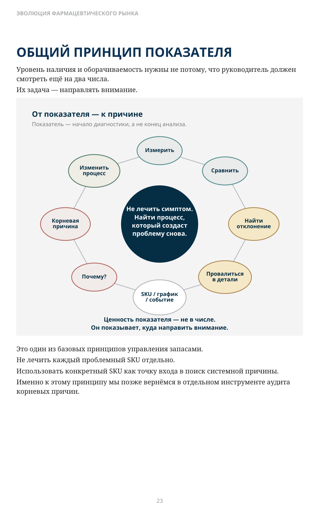
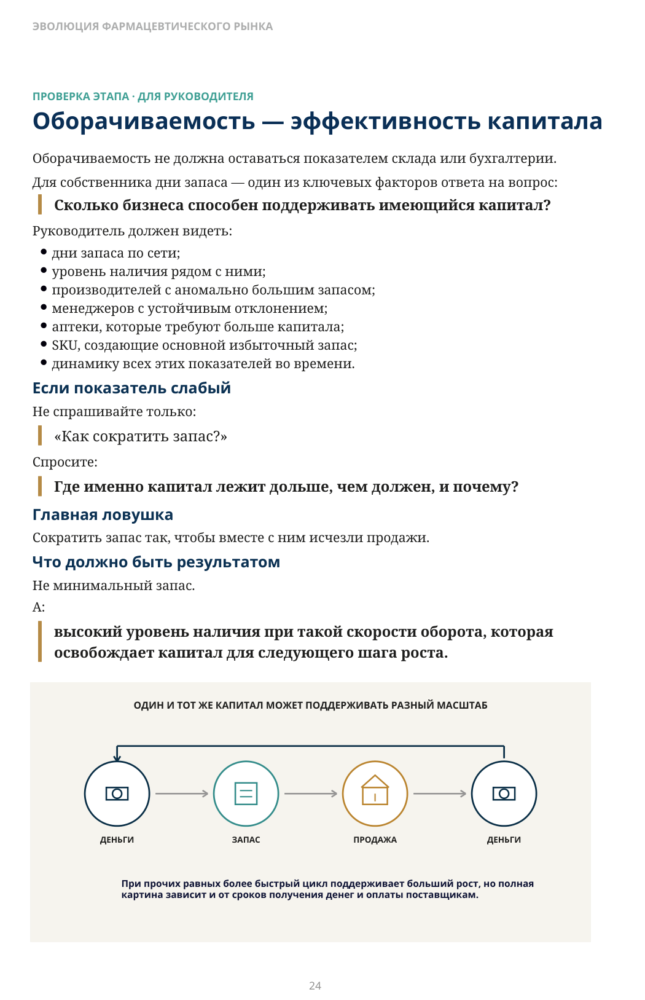

Сколько стоит высокий уровень наличия?
ЧАСТЬ II · ЭТАП 2
Оборотный капитал, отсрочка поставщика и рост
В предыдущей главе мы поставили цель: клиент должен находить нужный товар чаще, чем у конкурента. Самый простой способ поднять уровень наличия известен каждому — купить больше товара и разложить его по аптекам. Пустых полок станет меньше. Но появляется другой вопрос:
Сколько капитала мы заплатили за этот уровень сервиса?
Высокий уровень наличия сам по себе ещё не означает хорошего управления. Он показывает, насколько надёжно сеть обслуживает спрос. Но не показывает, какой ценой достигнута эта надёжность.
Наличие выигрывает клиента. Более быстрая оборачиваемость высвобождает капитал для роста.
Уровень наличия × дни запаса
Два показателя нельзя оптимизировать независимо.
высокий
целевая зона
низкий
низкие
высокие
Наличие выигрывает клиента. Более быстрая оборачиваемость высвобождает капитал для роста.
Где лежат деньги растущей сети?
Товар в аптеке выглядит как ассортимент. В финансовой системе это деньги, которые временно перестали быть деньгами. Пока упаковка лежит на полке, этот капитал нельзя использовать, чтобы:
- открыть новую аптеку;
- расширить востребованный ассортимент;
- оплатить поставщиков;
- инвестировать в склад, онлайн или технологии;
- купить другую сеть.
Чем медленнее товар возвращается в деньги, тем больше нового капитала требуется для каждого следующего шага. Компания может быть прибыльной на бумаге и при этом постоянно испытывать нехватку денежных средств. Прибыль в отчётности есть. Но значительная часть денег связана в тысячах упаковок, распределённых по всей сети.
Чтобы увидеть это ограничение, нужен второй показатель — оборачиваемость.
Что означает оборачиваемость в днях?
В этой книге под оборачиваемостью мы прежде всего будем понимать дни запаса: на сколько дней текущих продаж хватает среднего товарного остатка.
КАК СЧИТАТЬ ДНИ ЗАПАСА
Дни запаса = средний запас в закупочной стоимости / средняя дневная себестоимость продаж
Сравнивать показатель имеет смысл только при сопоставимом уровне наличия.
Если сеть держит запас примерно на 35 дней, капитал в среднем проходит путь от товара обратно к деньгам медленнее, чем при запасе на 20 дней. Но сравнение имеет смысл только при сопоставимом уровне обслуживания клиента. Сократить запас до десяти дней и потерять товар на полке — не победа. Поднять уровень наличия, увеличив запас до шестидесяти дней, — тоже не победа. Уровень наличия и оборачиваемость всегда нужно читать вместе.
Можно улучшить один показатель и ухудшить бизнес?
Да. Причём сделать это очень легко. Если премировать только за уровень наличия, аптеки начнут страховаться лишним товаром. Если премировать только за сокращение дней запаса, сеть начнёт экономить на продажах. Поэтому вопрос руководителя не:
«Какой у нас уровень наличия?» и не:
«Какая у нас оборачиваемость?»
А:
Какой уровень сервиса мы создаём ценой капитала, вложенного в запас?
Может ли поставщик финансировать рост сети?
Представим две иллюстративные цифры:
- поставщику нужно заплатить через 60 дней;
- сеть держит в среднем около 20 дней запаса.
В розничной модели, где продажи быстро превращаются обратно в деньги, значительная часть капитала возвращается в бизнес раньше срока оплаты поставщику. Возникает положительное окно оборотного капитала. Это не бесплатные деньги. Каждая новая поставка имеет свой срок оплаты, а у бизнеса есть налоги, зарплаты и другие обязательства. Но принцип важен:
Если товар превращается обратно в деньги существенно быстрее, чем наступает срок оплаты поставщику, скорость оборота становится источником финансовой гибкости.
Часть расширения можно финансировать более быстрым оборотом и отсрочкой поставщика. Упрощённо: дни финансирования = дни запаса + ожидание денег - отсрочка поставщика.
Деньги возвращаются раньше срока оплаты
Сила отсрочки зависит от скорости оборота.
деньги от розничных продаж возвращаются в бизнес
≈ 20 дней запаса
60–90 дней
иллюстративный ориентир
День 0
не срок продажи
срок оплаты
одной поставки
приход товара возникает обязательство
Иллюстративный пример: конкретные сроки зависят от товара, компании и поставщика.
Пример: 35–40 дней → менее 20
В одном из проектов оборачиваемость сети до изменений находилась примерно на уровне 35–40 дней. После перестройки управления запасами показатель опустился ниже 20 дней при сохранении высокого уровня наличия. Экономический результат был заметен не только в отчётах. В компании высвободился оборотный капитал, который раньше находился в товаре. Один из клиентов, начав примерно с 70 аптек, в дальнейшем вырос приблизительно до 1 000. Через несколько месяцев после улучшений собственник позвонил с необычным вопросом:
«У меня на счёте денег стало много. Что с ними делать?»
Ответ был практическим:
«Открывать аптеки».
Рост до 1 000 точек нельзя объяснить одним показателем. Для него потребовались стратегия, команда, локации, закупки, приобретения и множество других решений. Но более быстрая оборачиваемость стала одним из факторов, которые высвободили капитал и позволили ускорить рост.
Как руководитель использует оборачиваемость
Оборачиваемость — это не только один показатель по всей сети. Она становится гораздо полезнее, когда руководитель использует её для поиска отклонений.
1. Производитель или поставщик
Предположим, продукция нескольких сопоставимых производителей продаётся с близкой скоростью, а сеть поддерживает по ним сопоставимый уровень наличия. Но по одному производителю для поддержания этого уровня сеть систематически вынуждена держать существенно больше дней запаса. Вопрос: Почему его ассортимент связывает в запасе больше капитала, чем сопоставимый ассортимент других производителей?
- крупные минимальные партии;
- закупка под скидку;
- закупка под промоакцию;
- длинный срок поставки;
- договорённости о большем объёме;
- неправильная закупочная политика;
- поставка большего количества, чем оправдывает реальная потребность сети.
Плохая оборачиваемость не доказывает, что производитель «вытолкнул» товар в сеть. Но она показывает, где стоит задать этот вопрос.
2. Категорийный менеджер или закупщик
Если у пяти менеджеров портфели работают условно на 35–38 дней, а у шестого — на 50, это уже управленческое отклонение. Причины могут быть совершенно невинными:
- другой ассортимент;
- иной срок поставки;
- большая минимальная партия;
- сезонность.
Но могут существовать и другие стимулы:
- закупка ради скидки;
- давление поставщика;
- личные договорённости;
- конфликт интересов.
Сам показатель ничего из этого не доказывает.
Сильное и устойчивое отклонение — повод проверить, не влияют ли на закупку стимулы, не связанные с реальной потребностью сети.
Смысл не в подозрении. Смысл в прозрачности.
3. Аптека
Если средняя оборачиваемость сети — около 35 дней, а отдельная аптека держит 45–50, руководителю не нужно обследовать все точки. Нужно открыть именно эту аптеку. Что там происходит?
- сотрудник вручную вмешивается в заказ;
- закупается больше необходимого;
- используются локальные поставщики;
- нарушаются правила;
- неверно настроены параметры;
- структура спроса действительно отличается.
Показатель показывает направление расследования.
4. От показателя — к конкретному SKU
Допустим, оборачиваемость ухудшилась. Не надо останавливаться на среднем числе. Идём глубже:
Где именно?
У какого производителя? У какого менеджера? В какой аптеке? Какие товарные позиции дали основной вклад? Открываем график конкретного SKU. Видим большой приход. И задаём вопрос:
Почему он появился?
Так показатель превращается из отчёта в диагностическую систему.
Короткий эпизод из практики
В одном из проектов собственник по воскресеньям просматривал необычные закупки по отдельным аптекам. Если видел, что точка купила пять единиц товара там, где по потребности требовалась одна, в понедельник ответственный должен был объяснить:
«Почему купили пять?»
Через некоторое время сама прозрачность изменила поведение. Люди понимали: необычная закупка не исчезнет внутри общего оборота сети. Она останется в истории и будет видна.
ОБЩИЙ ПРИНЦИП ПОКАЗАТЕЛЯ
Уровень наличия и оборачиваемость нужны не потому, что руководитель должен смотреть ещё на два числа. Их задача — направлять внимание.
Это один из базовых принципов управления запасами. Не лечить каждый проблемный SKU отдельно. Использовать конкретный SKU как точку входа в поиск системной причины. Именно к этому принципу мы позже вернёмся в отдельном инструменте аудита корневых причин.

Описание схемы
FIG_009: ОБЩИЙ ПРИНЦИП ПОКАЗАТЕЛЯ
Схема движения от показателя к причине: показатель измеряют, сравнивают, находят отклонение, декомпозируют до SKU/точки/события, проверяют данные и ищут корневую причину. Ценность показателя — в поиске причин, а не только в числе.
Оборачиваемость — эффективность капитала
Оборачиваемость не должна оставаться показателем склада или бухгалтерии. Для собственника дни запаса — один из ключевых факторов ответа на вопрос:
Сколько бизнеса способен поддерживать имеющийся капитал?
Руководитель должен видеть:
- дни запаса по сети;
- уровень наличия рядом с ними;
- производителей с аномально большим запасом;
- менеджеров с устойчивым отклонением;
- аптеки, которые требуют больше капитала;
- SKU, создающие основной избыточный запас;
- динамику всех этих показателей во времени.
Если показатель слабый
Не спрашивайте только:
«Как сократить запас?»
Спросите:
Где именно капитал лежит дольше, чем должен, и почему?
Главная ловушка
Сократить запас так, чтобы вместе с ним исчезли продажи.
Что должно быть результатом
Не минимальный запас. А:
высокий уровень наличия при такой скорости оборота, которая освобождает капитал для следующего шага роста.

Описание схемы
FIG_010: Оборачиваемость — эффективность капитала
Цикл капитала показан как последовательность «деньги → запас → продажа → деньги». Одинаковая единица капитала может поддерживать разный масштаб бизнеса: чем быстрее оборачивается запас, тем больше операций поддерживает тот же капитал.